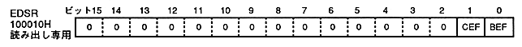

The transfer end status register (EDSR, End status register) indicates the end status of the previous frame processing. This is a read-only 16-bit register at address 100010H. Set unused bits to 0.

End bit fetch status in current frame: current end-bit fetch status (CEF), bit 1
Indicates whether the end bit (drawing end command) has been fetched from the command table in the current drawing frame. When it is 0, the end bit indicates an unfetched state, and when it is 1, it indicates that the end bit has been fetched and drawing has ended.
CEF
End bit fetch status
0
End bit unfetched in current frame
1
End bit fetch and rendering end in current frame
VDP1 fetches the command table in VRAM one after another and draws it in the frame buffer. When the drawing end command (end bit is 1) is fetched, drawing processing for one frame is completed. At this time, CEF is set to 1.
When data is transferred from the CPU to the VRAM when drawing is finished (CEF = 1), the CPU can access the VRAM without waiting without drawing overhead.
Fetch the drawing end command, VDP1 sets CEF to 1 and generates an interrupt signal.
There are two methods to determine the end of drawing: a method that checks the end bit fetch status with CEF (polling) and a method that uses this interrupt signal.
If there is no drawing end command in VRAM, this bit will remain 0 if it is defined so that it cannot be fetched in jump format.
This bit is initialized to 0 when the frame buffer is switched or when drawing starts.
CEF and BEF may not be 1 if the drawing end command fetch matches when switching the frame buffer.